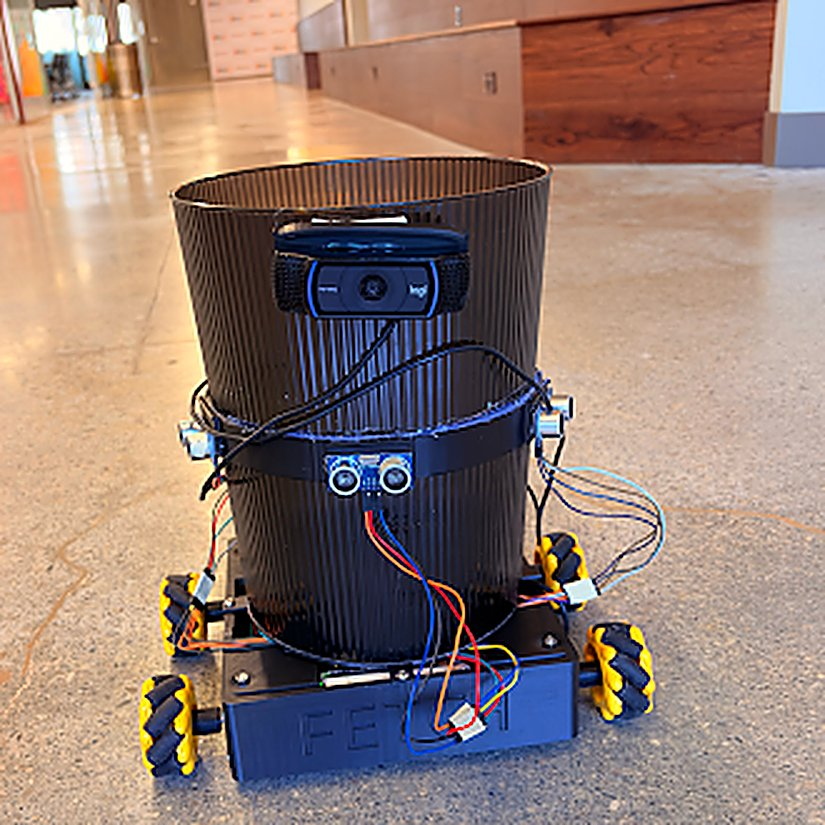
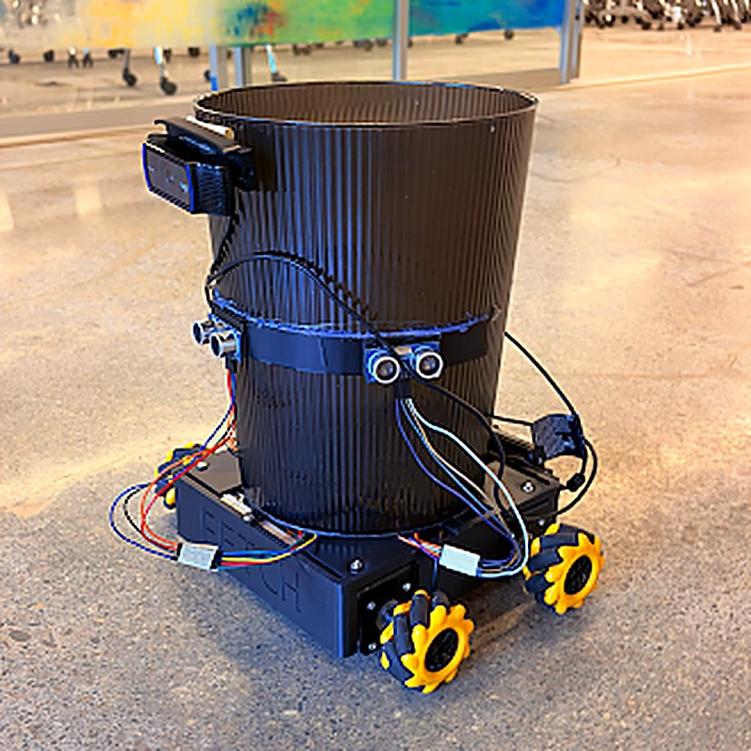
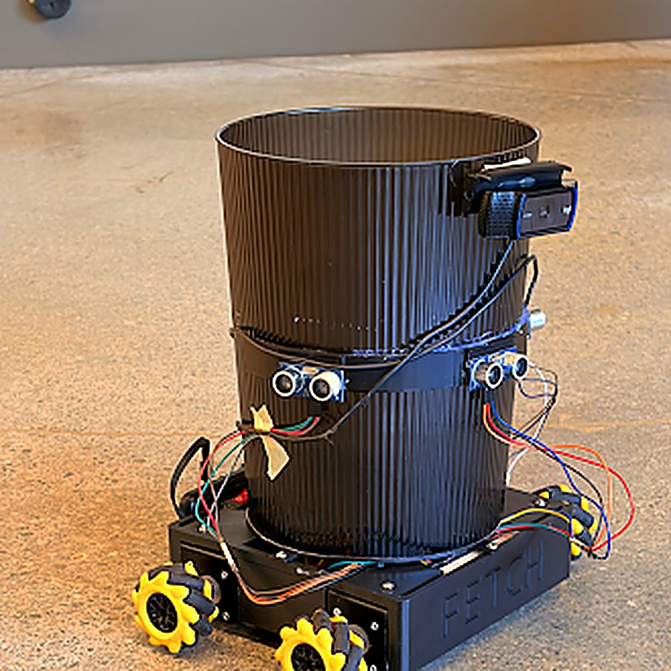

1ST PLACE OVERALL · CSI HACKS · 82+ TEAMS
Fetch
Co-Founder & Hardware Lead, mechanical + electrical, roughly half the stack
Fetch is a robot that carries a trash can around a gallery and comes when you call it. You drive it around a room once and name each stop, and after that it just goes there on its own. It uses AprilTags and QR codes instead of lidar or a stored map, plus an ultrasonic e-stop so it doesn't run into anyone. Visitors call it by pointing their phone at the AprilTag next to them. Built this with my co-founder Rishith in about eight hours: he did the app and routing, I did the CAD, electronics, and hardware.
- Compute Raspberry Pi 4 + Arduino Uno R4
- Drive 4× NEMA 17, mecanum wheels
- Localization AprilTags + QR destinations
- Safety Ultrasonic e-stop